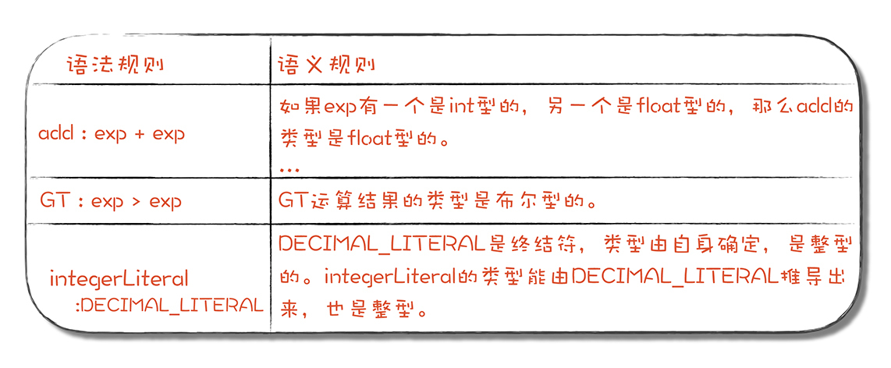
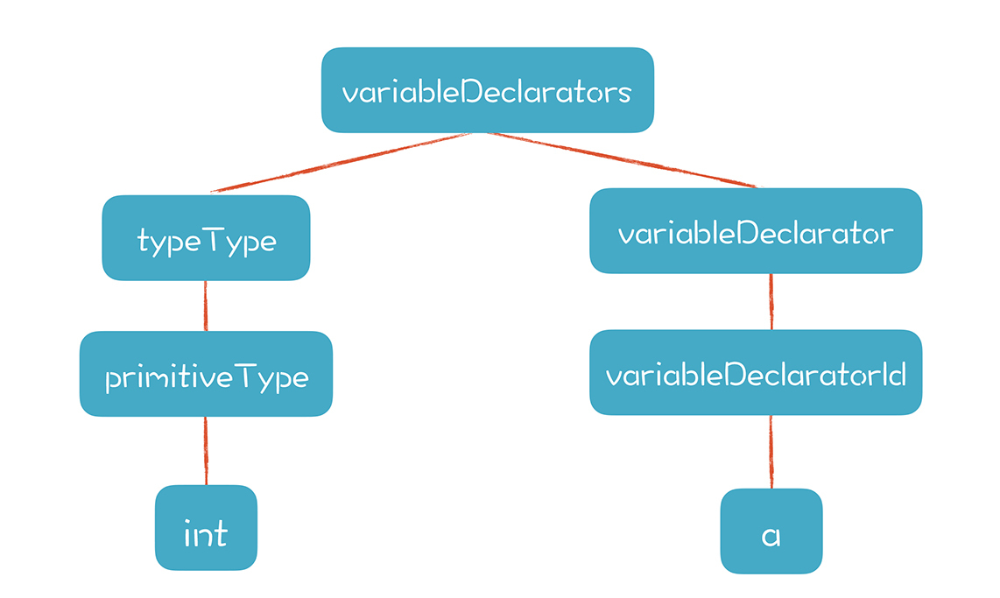
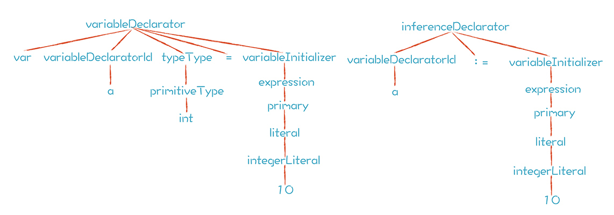

- 00 开篇词 为什么你要学习编译原理？.md.html
- 01 理解代码：编译器的前端技术.md.html
- 02 正则文法和有限自动机：纯手工打造词法分析器.md.html
- 03 语法分析（一）：纯手工打造公式计算器.md.html
- 04 语法分析（二）：解决二元表达式中的难点.md.html
- 05 语法分析（三）：实现一门简单的脚本语言.md.html
- 06 编译器前端工具（一）：用Antlr生成词法、语法分析器.md.html
- 07 编译器前端工具（二）：用Antlr重构脚本语言.md.html
- 08 作用域和生存期：实现块作用域和函数.md.html
- 09 面向对象：实现数据和方法的封装.md.html
- 10 闭包： 理解了原理，它就不反直觉了.md.html
- 11 语义分析（上）：如何建立一个完善的类型系统？.md.html
- 12 语义分析（下）：如何做上下文相关情况的处理？.md.html
- 13 继承和多态：面向对象运行期的动态特性.md.html
- 14 前端技术应用（一）：如何透明地支持数据库分库分表？.md.html
- 15 前端技术应用（二）：如何设计一个报表工具？.md.html
- 16 NFA和DFA：如何自己实现一个正则表达式工具？.md.html
- 17 First和Follow集合：用LL算法推演一个实例.md.html
- 18 移进和规约：用LR算法推演一个实例.md.html
- 19 案例总结与热点问题答疑：对于左递归的语法，为什么我的推导不是左递归的？.md.html
- 20 高效运行：编译器的后端技术.md.html
- 21 运行时机制：突破现象看本质，透过语法看运行时.md.html
- 22 生成汇编代码（一）：汇编语言其实不难学.md.html
- 23 生成汇编代码（二）：把脚本编译成可执行文件.md.html
- 24 中间代码：兼容不同的语言和硬件.md.html
- 25 后端技术的重用：LLVM不仅仅让你高效.md.html
- 26 生成IR：实现静态编译的语言.md.html
- 27 代码优化：为什么你的代码比他的更高效？.md.html
- 28 数据流分析：你写的程序，它更懂.md.html
- 29 目标代码的生成和优化（一）：如何适应各种硬件架构？.md.html
- 30 目标代码的生成和优化（二）：如何适应各种硬件架构？.md.html
- 31 内存计算：对海量数据做计算，到底可以有多快？.md.html
- 32 字节码生成：为什么Spring技术很强大？.md.html
- 33 垃圾收集：能否不停下整个世界？.md.html
- 34 运行时优化：即时编译的原理和作用.md.html
- 35 案例总结与热点问题答疑：后端部分真的比前端部分难吗？.md.html
- 36 当前技术的发展趋势以及其对编译技术的影响.md.html
- 37 云编程：云计算会如何改变编程模式？.md.html
- 38 元编程：一边写程序，一边写语言.md.html
- 加餐 汇编代码编程与栈帧管理.md.html
- 用户故事 因为热爱，所以坚持.md.html
- 第二季回归 这次，我们一起实战解析真实世界的编译器.md.html
- 结束语 用程序语言，推动这个世界的演化.md.html
- 捐赠
11 语义分析（上）：如何建立一个完善的类型系统？
在做语法分析时我们可以得到一棵语法树，而基于这棵树能做什么，是语义的事情。比如，+号的含义是让两个数值相加，并且通常还能进行缺省的类型转换。所以，如果要区分不同语言的差异，不能光看语言的语法。比如Java语言和JavaScript在代码块的语法上是一样的，都是用花括号，但在语义上是不同的，一个有块作用域，一个没有。
这样看来，相比词法和语法的设计与处理，语义设计和分析似乎要复杂很多。虽然我们借作用域、生存期、函数等特性的实现涉猎了很多语义分析的场景，但离系统地掌握语义分析，还差一点儿火候。所以，为了帮你攻破语义分析这个阶段，我会用两节课的时间，再梳理一下语义分析中的重要知识，让你更好地建立起相关的知识脉络。
今天这节课，我们把注意力集中在类型系统这个话题上。
围绕类型系统产生过一些争论，有的程序员会拥护动态类型语言，有的会觉得静态类型语言好。要想探究这个问题，我们需要对类型系统有个清晰的了解，最直接的方式，就是建立一个完善的类型系统。
那么什么是类型系统？我们又该怎样建立一个完善的类型系统呢？
其实，类型系统是一门语言所有的类型的集合，操作这些类型的规则，以及类型之间怎么相互作用的（比如一个类型能否转换成另一个类型）。如果要建立一个完善的类型系统，形成对类型系统比较完整的认知，需要从两个方面出发：
- 根据领域的需求，设计自己的类型系统的特征。
- 在编译器中支持类型检查、类型推导和类型转换。
先从第一个方面出发看一下。
设计类型系统的特征
在进入这个话题之前，我想先问你一个有意义的问题：类型到底是什么？我们说一个类型的时候，究竟在说什么？
要知道，在机器代码这个层面，其实是分不出什么数据类型的。在机器指令眼里，那就是0101，它并不对类型做任何要求，不需要知道哪儿是一个整数，哪儿代表着一个字符，哪儿又是内存地址。你让它做什么操作都可以，即使这个操作没有意义，比如把一个指针值跟一个字符相加。
那么高级语言为什么要增加类型这种机制呢？
对类型做定义很难，但大家公认的有一个说法：类型是针对一组数值，以及在这组数值之上的一组操作。比如，对于数字类型，你可以对它进行加减乘除算术运算，对于字符串就不行。
所以，类型是高级语言赋予的一种语义，有了类型这种机制，就相当于定了规矩，可以检查施加在数据上的操作是否合法。因此类型系统最大的好处，就是可以通过类型检查降低计算出错的概率。所以，现代计算机语言都会精心设计一个类型系统，而不是像汇编语言那样完全不区分类型。
不过，类型系统的设计有很多需要取舍和权衡的方面，比如：
- 面向对象的拥护者希望所有的类型都是对象，而重视数据计算性能的人认为应该支持非对象化的基础数据类型；
- 你想把字符串作为原生数据类型，还是像Java那样只是一个普通的类？
- 是静态类型语言好还是动态类型语言好？
- ……
虽然类型系统的设计有很多需要取舍和权衡的方面，但它最需要考虑的是，是否符合这门语言想解决的问题，我们用静态类型语言和动态类型语言分析一下。
根据类型检查是在编译期还是在运行期进行的，我们可以把计算机语言分为两类：
- 静态类型语言（全部或者几乎全部的类型检查是在编译期进行的）。
- 动态类型语言（类型的检查是在运行期进行的）。
静态类型语言的拥护者说：
因为编译期做了类型检查，所以程序错误较少，运行期不用再检查类型，性能更高。像C、Java和Go语言，在编译时就对类型做很多处理，包括检查类型是否匹配，以及进行缺省的类型转换，大大降低了程序出错的可能性，还能让程序运行效率更高，因为不需要在运行时再去做类型检查和转换。
而动态类型语言的拥护者说：
静态语言太严格，还要一遍遍编译，编程效率低，用动态类型语言方便进行快速开发。JavaScript、Python、PHP等都是动态类型的。
客观地讲，这些说法都有道理。目前的趋势是，某些动态类型语言在想办法增加一些机制，在编译期就能做类型检查，比如用TypeScript代替JavaScript编写程序，做完检查后再输出成JavaScript。而某些静态语言呢，却又发明出一些办法，部分地绕过类型检查，从而提供动态类型语言的灵活性。
再延伸一下，跟静态类型和动态类型概念相关联的，还有强类型和弱类型。强类型语言中，变量的类型一旦声明就不能改变，弱类型语言中，变量类型在运行期时可以改变。二者的本质区别是，强类型语言不允许违法操作，因为能够被检查出来，弱类型语言则从机制上就无法禁止违法操作，所以是不安全的。比如你写了一个表达式a*b。如果a和b这两个变量是数值，这个操作就没有问题，但如果a或b不是数值，那就没有意义了，弱类型语言可能就检查不出这类问题。
也就是，静态类型和动态类型说的是什么时候检查的问题，强类型和弱类型说的是就算检查，也检查不出来，或者没法检查的问题，这两组概念经常会被搞混，所以我在这里带你了解一下。
接着说回来。关于类型特征的取舍，是根据领域问题而定的。举例来说，很多人可能都觉得强类型更好，但对于儿童编程启蒙来说，他们最好尽可能地做各种尝试，如果必须遵守与类型有关的规则，程序总是跑不起来，可能会打击到他们。
对于playscript而言，因为目前是用来做教学演示的，所以我们尽可能地多涉及与类型处理有关的情况，供大家体会算法，或者在自己的工作中借鉴。
首先，playscript是静态类型和强类型的，所以几乎要做各种类型检查，你可以参考看看这些都是怎么做的。
第二，我们既支持对象，也支持原生的基础数据类型。这两种类型的处理特点不一样，你也可以借鉴一下。后面面向对象的一讲，我会再讲与之相关的子类型（Subtyping）和运行时类型信息（Run Time Type Information, RTTI）的概念，这里就不展开了。
第三，我们还支持函数作为一等公民，也就是支持函数的类型。函数的类型是它的原型，包括返回值和参数，原型一样的函数，就看做是同样类型的，可以进行赋值。这样，你也就可以了解实现函数式编程特性时，要处理哪些额外的类型问题。
接下来，我们来说一说如何做类型检查、类型推导和类型转换。
如何做类型检查、类型推导和类型转换
先来看一看，如果编写一个编译器，我们在做类型分析时会遇到哪些问题。以下面这个最简单的表达式为例，这个表达式在不同的情况下会有不同的运行结果：
a = b + 10
- 如果b是一个浮点型，b+10的结果也是浮点型。如果b是字符串型的，有些语言也是允许执行+号运算的，实际的结果是字符串的连接。这个分析过程，就是类型推导（Type Inference）。
- 当右边的值计算完，赋值给a的时候，要检查左右两边的类型是否匹配。这个过程，就是类型检查（Type Checking）。
- 如果a的类型是浮点型，而右边传过来的是整型，那么一般就要进行缺省的类型转换（Type Conversion）。
类型的检查、推导和转换是三个工作，可是采用的技术手段差不多，所以我们放在一起讲，先来看看类型的推导。
在早期的playscript的实现中，是假设运算符两边的类型都是整型的，并做了强制转换。
这在实际应用中，当然不够用，因为我们还需要用到其他的数据类型。那怎么办呢？在运行时再去判断和转换吗？当然可以，但我们还有更好的选择，就是在编译期先判断出表达式的类型来。比如下面这段代码，是在RefResolve.java中，推导表达式的类型：
case PlayScriptParser.ADD:
if (type1 == PrimitiveType.String ||
type2 == PrimitiveType.String){
type = PrimitiveType.String;
}
else if (type1 instanceof PrimitiveType &&
type2 instanceof PrimitiveType){
//类型“向上”对齐，比如一个int和一个float，取float
type = PrimitiveType.getUpperType(type1,type2);
}else{
at.log("operand should be PrimitiveType for additive operation", ctx);
}
break;
这段代码提到，如果操作符号两边有一边数据类型是String类型的，那整个表达式就是String类型的。如果是其他基础类型的，就要按照一定的规则进行类型的转换，并确定运算结果的类型。比如，+号一边是double类型的，另一边是int类型的，那就要把int型的转换成double型的，最后计算结果也是double类型的。
做了类型的推导以后，我们就可以简化运行期的计算，不需要在运行期做类型判断了：
private Object add(Object obj1, Object obj2, Type targetType) {
Object rtn = null;
if (targetType == PrimitiveType.String) {
rtn = String.valueOf(obj1) +
String.valueOf(obj2);
} else if (targetType == PrimitiveType.Integer) {
rtn = ((Number)obj1).intValue() +
((Number)obj2).intValue();
} else if (targetType == PrimitiveType.Float) {
rtn = ((Number)obj1).floatValue()+
((Number)obj2).floatValue();
}
...
return rtn;
}
通过这个类型推导的例子，我们又可以引出S属性（Synthesized Attribute）的知识点。如果一种属性能够从下级节点推导出来，那么这种属性就叫做S属性，字面意思是综合属性，就是在AST中从下级的属性归纳、综合出本级的属性。更准确地说，是通过下级节点和自身来确定的。

与S属性相对应的是I属性（Inherited Attribute），也就是继承属性，即AST中某个节点的属性是由上级节点、兄弟节点和它自身来决定的，比如：
int a;
变量a的类型是int，这个很直观，因为变量声明语句中已经指出了a的类型，但这个类型可不是从下级节点推导出来的，而是从兄弟节点推导出来的。
在PlayScript.g4中，变量声明的相关语法如下：
variableDeclarators
: typeType variableDeclarator (',' variableDeclarator)*
;
variableDeclarator
: variableDeclaratorId ('=' variableInitializer)?
;
variableDeclaratorId
: IDENTIFIER ('[' ']')*
;
typeType
: (classOrInterfaceType| functionType | primitiveType) ('[' ']')*
;
把int a;这样一个简单的变量声明语句解析成AST，就形成了一棵有两个分枝的树：

这棵树的左枝，可以从下向上推导类型，所以类型属性也就是S属性。而右枝则必须从根节点（也就是variableDeclarators）往下继承类型属性，所以对于a这个节点来说，它的类型属性是I属性。
这里插一句，RefResolver.java实现了PlayScriptListener接口。这样，我们可以用标准的方法遍历AST。代码中的enterXXX()方法表示刚进入这个节点，exitXXX()方法表示退出这个节点，这时所有的子节点都已经遍历过了。在计算S属性时，我一定是在exitXXX()方法中，因为可以利用下级节点的类型推导出自身节点的类型。
很多现代语言会支持自动类型推导，例如Go语言就有两种声明变量的方式：
var a int = 10 //第一种
a := 10 //第二种
第一种方式，a的类型是显式声明的；第二种方式，a的类型是由右边的表达式推导出来- 的。从生成的AST中，你能看到它们都是经历了从下到上的综合，再从上到下的继承的过程：

说完了类型推导，我们再看看类型检查。
类型检查主要出现在几个场景中：
- 赋值语句（检查赋值操作左边和右边的类型是否匹配）。
- 变量声明语句（因为变量声明语句中也会有初始化部分，所以也需要类型匹配）。
- 函数传参（调用函数的时候，传入的参数要符合形参的要求）。
- 函数返回值（从函数中返回一个值的时候，要符合函数返回值的规定）。
类型检查还有一个特点：以赋值语句为例，左边的类型，是I属性，是从声明中得到的；右边的类型是S属性，是自下而上综合出来的。当左右两边的类型相遇之后，就要检查二者是否匹配，被赋值的变量要满足左边的类型要求。
如果匹配，自然没有问题，如果不完全匹配，也不一定马上报错，而是要看看是否能进行类型转换。比如，一般的语言在处理整型和浮点型的混合运算时，都能进行自动的转换。像JavaScript和SQL，甚至能够在算术运算时，自动将字符串转换成数字。在MySQL里，运行下面的语句，会得到3，它自动将’2’转换成了数字：
select 1 + '2';
这个过程其实是有风险的，这就像在强类型的语言中开了一个后门，绕过或部分绕过了编译器的类型检查功能。把父类转成子类的场景中，编译器顶多能检查这两个类之间是否有继承关系，如果连继承关系都没有，这当然能检查出错误，制止这种转换。但一个基类的子类可能是很多的，具体这个转换对不对，只有到运行期才能检查出错误来。C语言因为可以强制做各种转换，这个后门开的就更大了。不过这也是C语言要达到它的设计目的，必须具备的特性。
关于类型的处理，大家可以参考playscript的示例代码，里面有三个类可以看一看：
- TypeResolver.java（做了自上而下的类型推导，也就是I属性的计算，包括变量- 声明、类的继承声明、函数声明）。
- RefResolver.java（有自下而上的类型推导的逻辑）。
- TypeChecker.java（类型检查）。
课程小结
本节课我们重点探讨了语义分析和语言设计中的一个重要话题：类型系统。
理解类型系统，了解它的本质对我们学习语言会有很大的帮助。我希望在这个过程中，你不会再被静态类型和动态类型，强类型和弱类型这样的概念难倒，甚至可以质疑已有的一些观念。比如，如果你仔细研究，会发现静态类型和动态类型不是绝对的，静态类型的语言如Java，也会在运行期去处理一些类型检查。强类型和弱类型可能也不是绝对的，就像C语言，你如果不允许做任何强制类型转换，不允许指针越界，那它也就完全变成强类型的了。
掌握对计算机语言更深一点儿的理解能力，将会是你学习编译原理的额外回报！
一课一思
针对今天讲的类型系统的知识，你所熟悉的语言是静态类型的，还是动态类型的？是强类型的，还是弱类型的？它的类型系统中有哪些你觉得有意思或者引起你困扰的设计？欢迎在留言区分享你的发现。
最后，感谢你的阅读，如果这篇文章让你有所收获，也欢迎你将它分享给更多的朋友。
本节课相关的示例代码放在文末，供你参考。
© 2019 - 2023 Liangliang Lee. Powered by gin and hexo-theme-book.